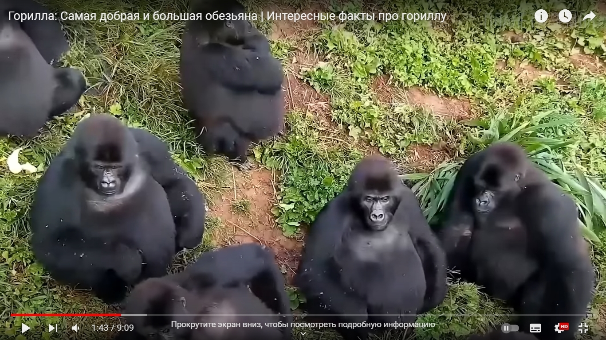
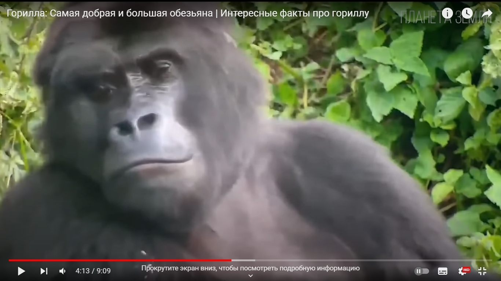
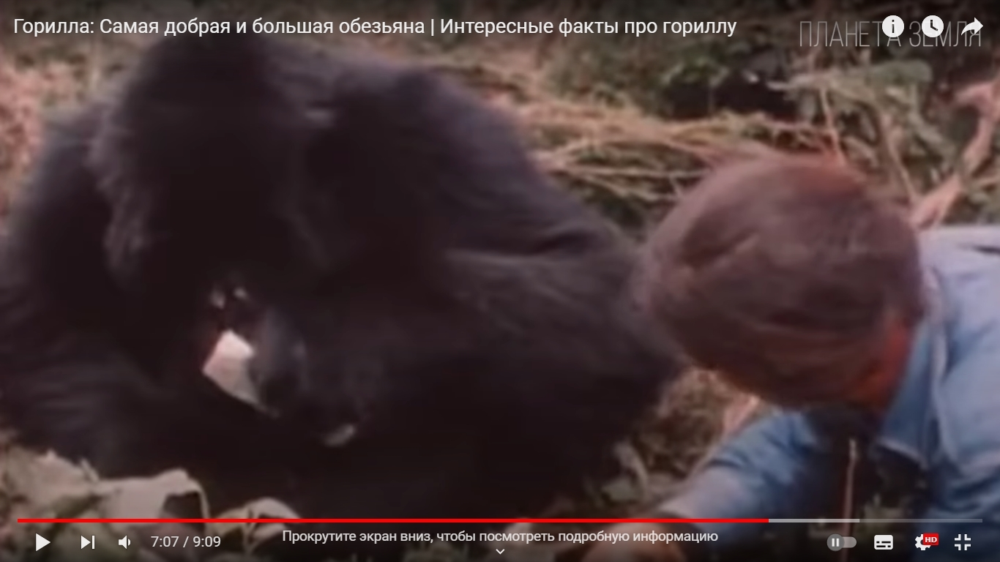

The Beijing Zoo



Population:
As of June 2018, the world population of mountain gorillas has more than 1000 individuals
Habitat:
Mountain gorillas have a very limited range in Central Africa in the Great Rift Valley.
Diet:
The basis of the diet of gorillas is plant foods. Of the plants used, wild celery, bedstraw, nettle, bamboo shoots, blue pygeum fruits can be distinguished.